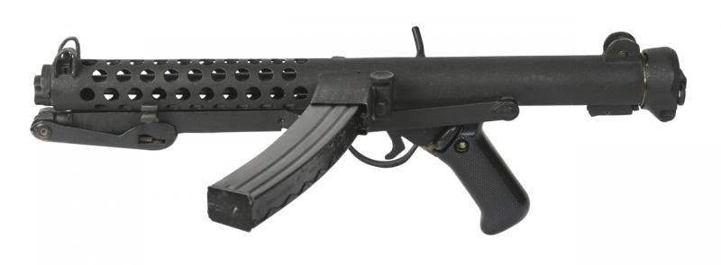

Glory
SAF Carbine

Carbine is a long gun that has a barrel shortened from its original length. Most modern carbines are rifles that are compact versions of a longer rifle or are rifles chambered for less powerful cartridges. The smaller size and lighter weight of carbines make them easier to handle.
1B1 Insas
Indian Small Arms System(INSAS) is a family of infantry arms consisting of an assault rifle and a light machine gun (LMG). It was manufactured by the Ordnance Factories Board at its various factories.The INSAS assault rifle was the standard infantry weapon of the Indian Armed Forces for almost three decades.
AK 203
The AK-203 is a Russian gas-operated, magazine-fed, select fire assault rifle designed to chamber the 7.62×39mm cartridge. It is one of the latest iterations of the AK series of assault rifles originally designed by Mikhail Kalashnikov. The AK-203 was developed in the 2010s by Kalashnikov Concern in Russia. The firearm was originally known as AK-103M before being renamed to AK-203 in 2019.
Dragunov SVD
The SVD-63 , is a semi-automatic marksman rifle chambered in 7.62×54mmR, developed in the Soviet Union. The SVD was designed to serve a novel squad support role to provide precise long-range engagement capabilities to ordinary troops following the adoption of intermediate calibers for use in standard infantry rifles.
Multi Grenade Launcher
The Milkor MGL (Multiple Grenade Launcher) is a lightweight 40 mm six-shot revolver-type grenade Launcher developed and manufactured in South Africa by Milkor Ltd. The MGL was demonstrated as a concept to the South African Defence Force in 1981. The MGL was then officially accepted into service with the SADF as the Y2. After its introduction in 1983, the MGL was gradually adopted by the armed forces and law enforcement organizations of over 50 countries.
Denel NTW 20
The NTW-20 is a South African anti-materiel rifle, developed by Denel Mechem in the 1990s. It is intended for deployment against targets including parked aircraft, telecommunication masts, power lines, missile sites, radar installations, refineries, satellite dishes, gun emplacements, bunkers, and personnel, using a range of specialised projectiles. As with other weapons of this type, it can also be used for counter sniping and ordnance disposal
Arjun
The Arjun is a third generation main battle tank developed by the Combat Vehicles Research and Development Establishment (CVRDE) of the Defence Research and Development Organisation (DRDO), for the Indian Army.The tank is named after Arjuna, the archer prince who is the main protagonist of the Indian epic poem Mahabharata.
T-72 Ajeya
Ajeya tank is the modernized version of T-72. The tank capability was enhanced with Global Positioning System (GPS), Explosive Reactive Armour (ERA) and Integrated Fire Detection and Suppression System (IFDSS) to the level of contemporary combat vehicles. The upgradation of the tank is being done by HVF, based on CVRDE design and issued to the Army for use.
T-90 Bhishma

The T-90 is a third-generation Russian main battle tank. It uses a 125 mm 2A46 smoothbore main gun, the 1A45T fire-control system, an upgraded engine, and gunner's thermal sight. Standard protective measures include a blend of steel and composite armour, smoke grenade dischargers, Kontakt-5 explosive-reactive armour and the Shtora infrared ATGM jamming system
BMP-2 Sarath

is the best infantry combact vehicles in the world with modern weapon systems.It is ideal for fighting battles with speed, surprise and deadly precision. Powered by 300 HP Engine, it is a highly mobile to meet all tactical requirementsf of mobility in a battlefield, travels at an incredible 65 KMPH, with easy steering ability in cross country terrain.
Agni
The Agni missile is a family of medium to intercontinental range ballistic missiles developed by India, named after one of the five elements of nature. Agni missiles are long range, nuclear weapons capable, surface to surface ballistic missiles. The first missile of the series, Agni-I was developed under the Integrated Guided Missile Development Program (IGMDP) and tested in 1989.
Brahmos
The BrahMos is a medium-range stealth ramjet supersonic cruise missile that can be launched from submarine, ships, aircraft or land, notably being the fastest supersonic cruise missile in the world. It is a joint-venture between the Indian Defence Research and Development Organisation (DRDO) and the Russian Federation's NPO Mashinostroyeniya, who together have formed BrahMos Aerospace.
Prithvi
Prithvi is a tactical surface-to-surface short-range ballistic missile (SRBM) developed by Defence Research and Development Organisation (DRDO) of India under the Integrated Guided Missile Development Program (IGMDP). It is deployed by India's Strategic Forces Command.
Nirbhay
Nirbhay is a long range, all-weather, subsonic cruise missile designed and developed in India by the Aeronautical Development Establishment (ADE) which is under Defence Research and Development Organisation (DRDO). The missile can be launched from multiple platforms and is capable of carrying conventional and nuclear warheads.